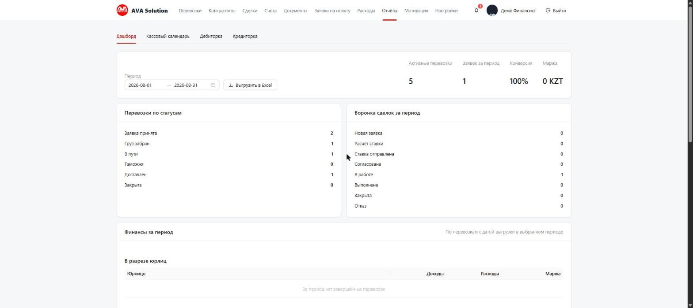
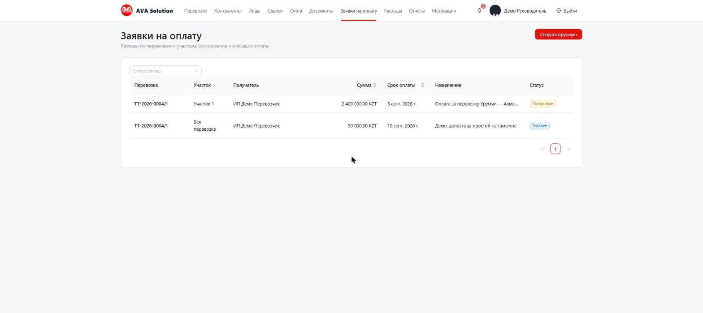

В системе есть две похожие, но не одинаковые роли. Ниже — инструкция для «Руководителя» (видит и решает по всей компании), а в конце — что именно отличается у «Руководителя отдела».
Раздел «Отчёты»: дашборд (перевозки по статусам, воронка сделок, финансы по юрлицам), кассовый календарь, дебиторка и кредиторка. Доступно только «Руководителю», финансисту и администратору.

Раздел «Заявки на оплату»: логисты и менеджеры создают заявки по перевозкам, вы (или финансист) согласуете их внутри карточки перевозки — статус пройдёт путь Заявлен → Согласован → Оплачен.

Раздел «Расходы» — аренда, зарплата и другие траты компании вне сделок. Доступ — как у финансиста.
В карточке любой сделки видна маржа (доходы, расходы, курсовая разница) с пометкой «Прогноз», «Предварительно» или «Финальная». Отказ по сделке — кнопка в карточке, причина строго из списка ТЗ.
За 30 дней до окончания договора уведомление уходит ответственному менеджеру. Если за 7 дней договор всё ещё не продлён — уведомление придёт и вам, и всем руководителям отделов (эскалация).
Раздел «Мотивация» — отчёт по всем сотрудникам компании.
Видит и делает: сделки, перевозки, лиды, счета, договоры и акты — но только по своему отделу (а не только по своим, как у обычного менеджера). Получает эскалацию по истекающим договорам своих сотрудников. В разделе «Мотивация» видит сводный отчёт по своему отделу, а не только свой личный, как менеджер и логист.
Не видит и не может: раздел «Отчёты» (дашборд, кассовый календарь, дебиторка/кредиторка), раздел «Расходы», согласовывать или оплачивать заявки на оплату. Эти три пункта — только у «Руководителя», финансиста и администратора.